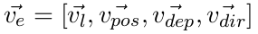
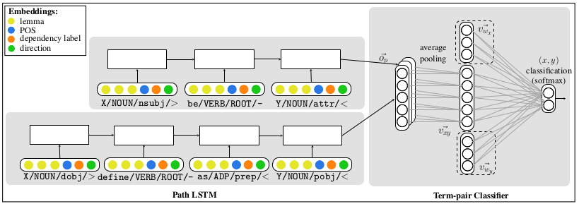
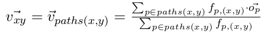
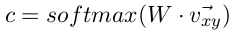
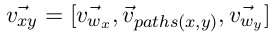

Improving Hypernymy Detection with an Integrated Path-based and Distributional Method
"What" part of the paper
There are two words and problem is to determine if one word is hypernymy of other. That is for (x, y) pair, y is hypernymy of x or not.
There are two methods for hypernymy detection explored, they are, distributional methods(based on distributional representation or embeddings) and path-based methods(based on lexico-syntactic path connecting hypernymy and hyponymy in corpus). Paper tries to kind of integrate both these methods together which actually gives a better performance compared to both individually.
"How" part of the paper
Distributional methods deals with concatenation, subtraction, dot product or such operations on embeddings of these pairs of words and giving binary label ouput. This performs quite well.
Path-based method deals with how the two words appear in the corpus. Example "Y such as X". That is looking at that path through which the two words are connected it tries to figure out if it is hypernymy or not.
The intuition behind integrating these two methods is that both the menthods are complementary and both gives some extra knowledge which other method dosent provide. It is also seen that integrating above two methods out performs both the methods.
First we will see how the paper encodes path-based features.
Consider the sentence in corpus containing both words of the pair. Depedency tree is formed first. In the above figure. notice that there is different representation for each edge of dependency tree. Each edge is denoted as lemma/POS/dep/dir. That is lemma, POS tag, the dependency label, and the direction of the edge.
To get the representation of the entire dependency tree, The edge representation shown above for a tree is passed through an LSTM and the last cell output is considered to be the dependency tree representation. To give input to LSTM network, an edge representation is needed, which is given by:
All the v's in RHS of the equation represent the embedding vector of lemma, part-of-speech, dependency label and dependency direction (along the path from x to y).
For a term-pair, first all the occurances are found in the corpus and paths are extracted. Then dependency tree is generated for all these paths. Then for a path, edge representation is formed for each edge in its dependency tree and is fed to LSTM network shown above. Final Hidden state of LSTM gives path representation. Such path representation is formed for every path. All these path representation are passed through average-pooling layer as follows:
Where fp,(x,y) is the frequency of p in paths(x,y).
Then the path vector is fed to a single-layer network that performs binary classification to decide whether y is a hypernym of x.
For the Intergrated Network which also integrates distributional representations, simple the word embedding of x and y is concatenated with path vector. This gives features path-based knowledge as well as distributional knowledge. This is shown in the dashed boxes in the model diagram.
Similarly, after including distributional features, updated path vector is formed which is passed throught single-layer network to perform binary classification.